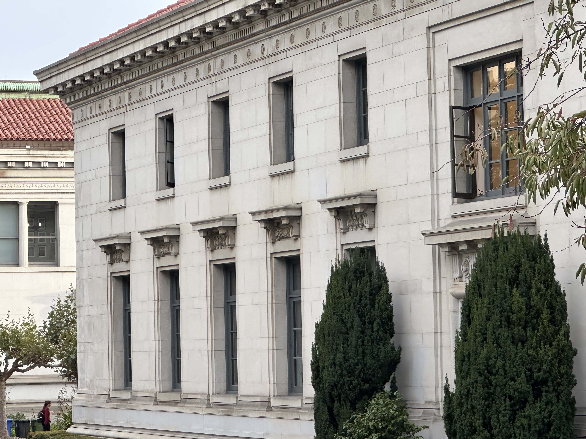
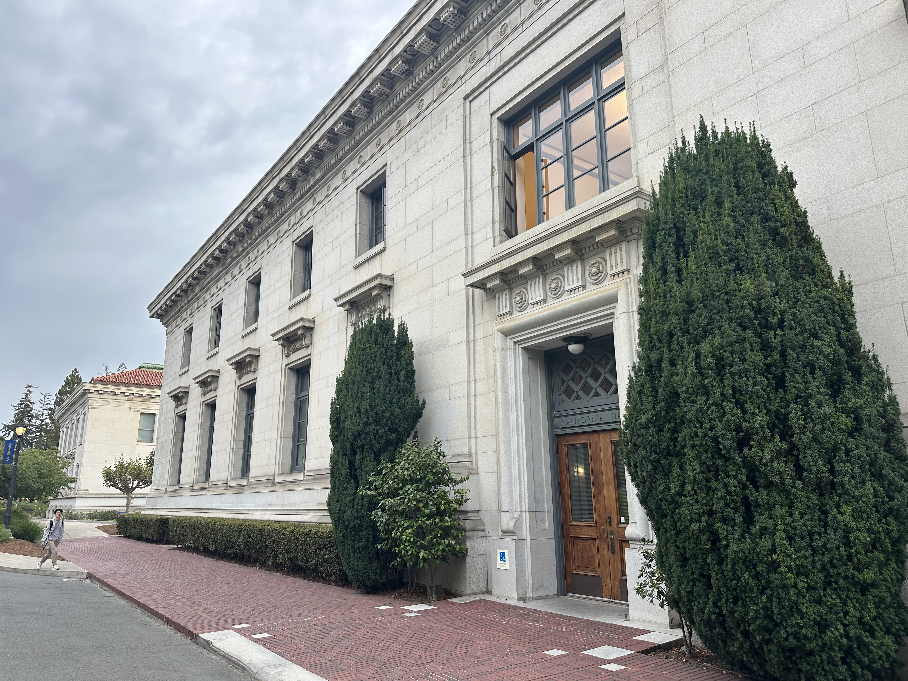
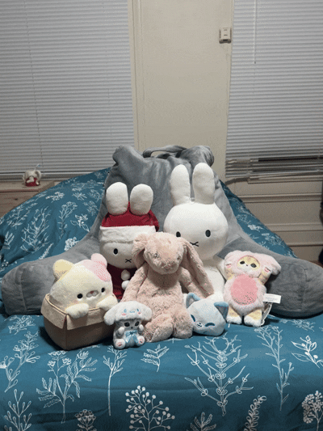

Part 1: Selfie: The Wrong Way vs. The Right Way
After taking photos of my friend from up close to from a distance, I noticed that the second photo looks much more realistic and better than the first. I think the reason for this is that the camera was nearest to certain features on her face compared to others, making her look distorted up close. But when I photographed her from a distance, the perspective was probably more natural because her face was captured in proportion to everything else.
P.S shoutout to my friend Nicole for being the subject of these!
Part 2: Architectural Perspective Compression
The first photo looks flattened and compressed compared to the second photo because it was taken from far away. The sense of depth was flattened because the near and far parts of the building appear almost the same size.But when I went close to the building to take the second photo, the sense of depth was much stronger because the difference in distance between the near and far objects/parts of the building was much greater.


Part 3: The Dolly Zoom
Dolly zoom effect!!

I used around 8 images to create this GIF. Once created, I realized that although the effect was visible, it appeared a bit choppy.

Here is a video I took, where I recorded while zooming in, keeping the subject in the same position throughout. The video converted to a GIF has a much smoother feel, probably because in the consecutive seconds of footage, I was able to capture much more evenly spaced frames compared to my first take.